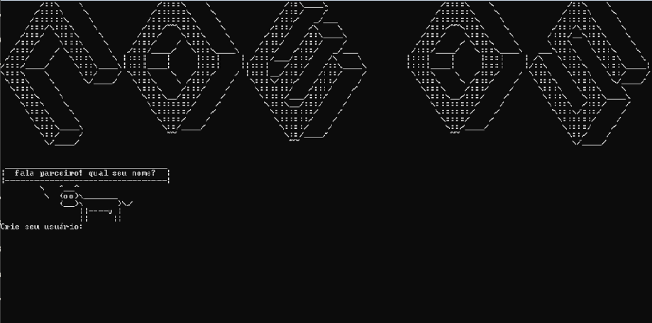
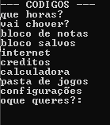
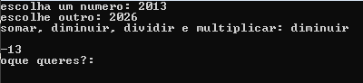

_______________
/ versao: 0.0.0 \
\---------------/
\ ^__^
\ (oo)\_______
(__)\ |\/\
||----w |
|| ||
O Cow OS, foi criado por Marcio Valença, conhecido como 01CR4M
O Cow OS e inspirado no MS DOS, mas um sistema mais atualizado para os tempos atuais
um sistema de terminal, sem janelas e nao sendo inspirado na monôtonia de windows!
Por enquanto, nao conseguimos portar o arquivo .py para .iso, apenas para exe, caso queira
instalar em uma maquina fisica (nao recomendado) e preciso baixa um os base para instalar o Cow OS!
_____ _______ _____ _______ _____
/\ \ /::\ \ /\ \ /::\ \ /\ \
/::\ \ /::::\ \ /::\____\ /::::\ \ /::\ \
/::::\ \ /::::::\ \ /:::/ / /::::::\ \ /::::\ \
/::::::\ \ /::::::::\ \ /:::/ _/___ /::::::::\ \ /::::::\ \
/:::/\:::\ \ /:::/~~\:::\ \ /:::/ /\ \ /:::/~~\:::\ \ /:::/\:::\ \
/:::/ \:::\ \ /:::/ \:::\ \ /:::/ /::\____\ /:::/ \:::\ \ /:::/__\:::\ \
/:::/ \:::\ \ /:::/ / \:::\ \ /:::/ /:::/ / /:::/ / \:::\ \ \:::\ \:::\ \
/:::/ / \:::\ \ /:::/____/ \:::\____\ /:::/ /:::/ _/___ /:::/____/ \:::\____\ ___\:::\ \:::\ \
/:::/ / \:::\ \ |:::| | |:::| | /:::/___/:::/ /\ \ |:::| | |:::| | /\ \:::\ \:::\ \
/:::/____/ \:::\____\|:::|____| |:::| ||:::| /:::/ /::\____\ |:::|____| |:::| |/::\ \:::\ \:::\____|
\:::\ \ \::/ / \:::\ \ /:::/ / |:::|__/:::/ /:::/ / \:::\ \ /:::/ / \:::\ \:::\ \::/ /
\:::\ \ \/____/ \:::\ \ /:::/ / \:::\/:::/ /:::/ / \:::\ \ /:::/ / \:::\ \:::\ \/____/
\:::\ \ \:::\ /:::/ / \::::::/ /:::/ / \:::\ /:::/ / \:::\ \:::\ \
\:::\ \ \:::\__/:::/ / \::::/___/:::/ / \:::\__/:::/ / \:::\ \:::\____\
\:::\ \ \::::::::/ / \:::\__/:::/ / \::::::::/ / \:::\ /:::/ /
\:::\ \ \::::::/ / \::::::::/ / \::::::/ / \:::\/:::/ /
\:::\ \ \::::/ / \::::::/ / \::::/ / \::::::/ /
\:::\____\ \::/____/ \::::/ / \::/____/ \::::/ /
\::/ / ~~ \::/____/ ~~ \::/ /
\/____/ ~~ \/____/ © 2024 Marcio Valença, conhecido como 01CR4M



caso queira contribuir, ou saber mais sobre o projeto
entre no meu canal do youtube, onde tem mais detalhes do projeto e vc poderam ajudar!